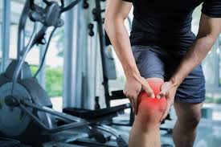

CENTRO DE FISIOTERAPIA, REHABILITACION Y TRAUMATOLOGIA A DEPORTISTAS DE ALTO RENDIMIENTO
En el Hospital de Recuperacion Deportiva "LALIGA" somos un grupo de especialistas certificados dedicados al tratamiento integral de las lesiones musculoesqueléticas y la medicina deportiva.
Acerca de Nosotros
Hospital de Deporte: Promoviendo la Salud y el Rendimiento
La Clínica de Deporte es un referente en atención integral para deportistas y personas activas. Su misión es promover la salud y el bienestar a través de la actividad física, ofreciendo servicios que mejoran el rendimiento y facilitan la recuperación. Realizan evaluaciones exhaustivas que incluyen análisis biomecánico y pruebas de condición física, permitiendo la elaboración de planes de tratamiento personalizados. La fisioterapia es fundamental en su enfoque, utilizando técnicas avanzadas como terapia manual y electroterapia para aliviar el dolor y mejorar la movilidad. Los médicos especializados tratan lesiones agudas y crónicas, ofreciendo tanto tratamientos no quirúrgicos como intervenciones mínimamente invasivas. El equipo de nutricionistas proporciona asesoría personalizada y los psicólogos deportivos ayudan a los atletas a manejar el estrés y mejorar la motivación. Las instalaciones cuentan con tecnología de última generación, asegurando un entorno óptimo para la salud y el rendimiento. La clínica también se enfoca en la prevención de lesiones mediante programas educativos y talleres. Con un equipo de profesionales dedicados, la Clínica de Deporte se convierte en el aliado ideal para alcanzar objetivos deportivos y disfrutar de una vida activa y saludable.
Horario de Atención Semanal
- Lunes: 8:00 AM - 8:00 PM
- Martes: 8:00 AM - 8:00 PM
- Miércoles: 8:00 AM - 8:00 PM
- Jueves: 8:00 AM - 8:00 PM
- Viernes: 8:00 AM - 8:00 PM
- Sábados: 9:00 AM - 2:00 PM
- Domingos: Cerrado
Nuestros Servicios
| FISIOTERAPIA | REHABILITACION | TRAUMATOLOGIA |
|---|---|---|
|  | ||
| Los fisioterapeutas de la clínica están especializados en la rehabilitación de lesiones deportivas. Utilizan técnicas como terapia manual, electroterapia y ejercicios específicos para facilitar una recuperación efectiva. | La rehabilitación deportiva es un proceso diseñado para ayudar a los atletas y personas activas a recuperarse de lesiones relacionadas con el deporte. Este tipo de rehabilitación se centra en restaurar la función física, reducir el dolor y prevenir futuras lesiones, permitiendo al individuo volver a su nivel óptimo de rendimiento. | La traumatología deportiva es una rama de la medicina que se especializa en el diagnóstico, tratamiento y prevención de lesiones relacionadas con la actividad física y el deporte. Los traumatólogos deportivos son médicos capacitados para abordar lesiones agudas y crónicas que afectan a atletas y personas activas. |